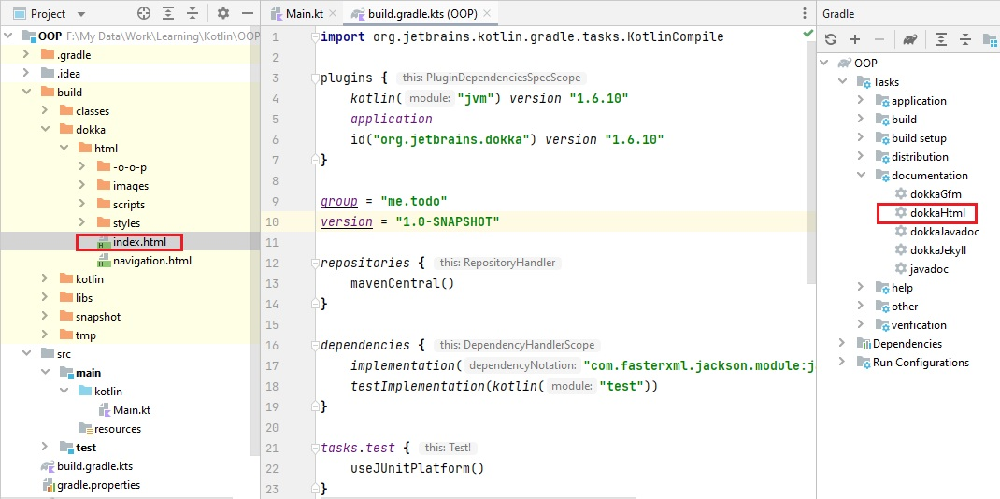

dokka installation
In build.gradle.kts, add new plugin
plugins {
id("org.jetbrains.dokka") version "1.6.10"
}To generate the documentation, run following command.
gradlew dokkaHtmlThis will generate documentation in build/dokka folder 
Link to elements
To link to another element (class, method, property, or parameter), simply put its name in square brackets:
Use the method [foo] for this purpose.
If you want to specify a custom label for the link, use the Markdown reference-style syntax:
Use [this method][foo] for this purpose.
You can also use qualified names in the links. Note that, unlike JavaDoc, qualified names always use the dot character to separate the components, even before a method name:
Use [kotlin.reflect.KClass.properties] to enumerate the properties of the class.
Names in links are resolved using the same rules as if the name was used inside the element being documented. In particular, this means that if you have imported a name into the current file, you don't need to fully qualify it when you use it in a KDoc comment.
Note that KDoc does not have any syntax for resolving overloaded members in links. Since the Kotlin documentation generation tool puts the documentation for all overloads of a function on the same page, identifying a specific overloaded function is not required for the link to work.